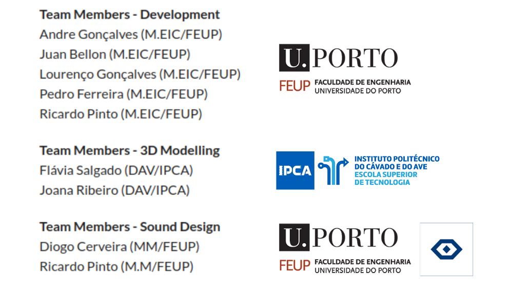
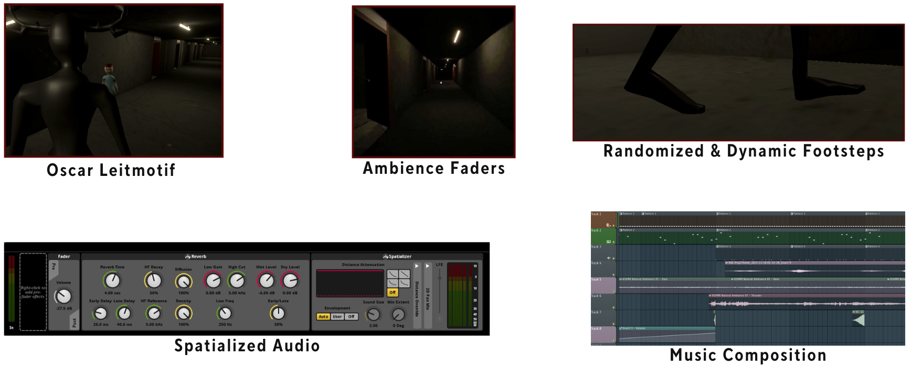
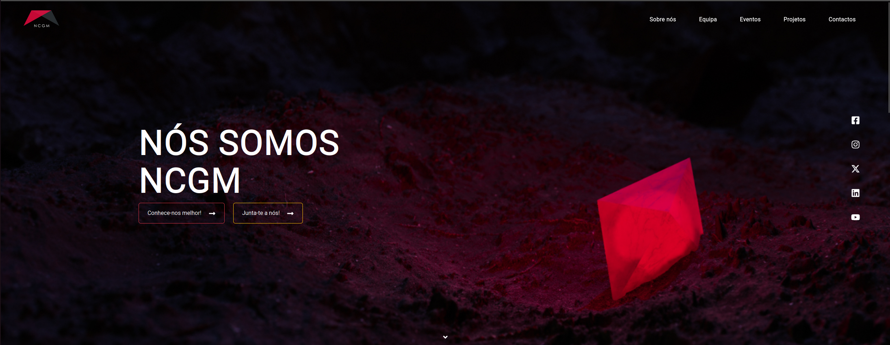

[comment]: # (This presentation was made with markdown-slides) [comment]: # (This is a CommonMark compliant comment. It will not be included in the presentation.) [comment]: # (Compile this presentation with the command below) [comment]: # (mdslides presentation.md --include media) [comment]: # (Set the theme:) [comment]: # (The list of themes is at https://revealjs.com/themes/) [comment]: # (The list of code themes is at https://highlightjs.org/) [comment]: # "You can also use quotes instead of parenthesis" [comment]: # 'Single quotes work too' [comment]: # (Pass optional settings to reveal.js:) [comment]: # (markdown: { smartypants: true }) [comment]: # (Other settings are documented at https://revealjs.com/config/) # Semana Profissão Engenheiro 2025 ## GIG (DDJD) | Abril 2025 <div style="font-size: 0.7em;"> Pedro Ferreira<br> MSc in Informatics and Computing Engineering Student @ FEUP<br> </div> Note: Olá a todos! Eu sou o Pedro Ferreira e sejam bem-vindos à FEUP e à Semana Profissão Engenheiro 2025! Hoje venho-vos dar um pouco da minha experiência do curso, principalmente na Unidade Curricular de Desenho e Desenvolvimento de Jogos Digitais (DDJD).
## Bem-vindos à FEUP!
## Bem-vindos à FEUP! - Quem gosta de jogar videojogos? Note: Só para ter uma ideia: quem é que daqui gosta de jogar videojogos?
## Bem-vindos à FEUP! - Quem gosta de jogar videojogos? - Quem gosta/gostaria de fazer videojogos? Note: E quem é que daqui gosta, ou gostaria de desenvolver videojogos?
## A FEUP é o sítio certo para o fazer! ✅  Note: Boa/Ok, então aqui na FEUP é um bom sítio/também se pode desenvolver videojogos! Por isso, caso se candidatem à faculdade e fiquem colocados aqui, podem escolher esta cadeira no 2º semestre do 1º ano do Mestrado de Engenharia Informática e Computação...
## A FEUP é o sítio certo para o fazer! ✅  Note: ... Como uma das vossas Unidades Curriculares optativas, como podem ver aqui! Na realidade, o meu desenvolvimento de jogos não começou bem aqui. Na verdade, começou logo no meu 1º ano de faculdade!
## Walkthrough até DDJD ### PROG <video width="720" height="480" src="media/videos/Proj_PROG.webm" type="video/webm" muted controls></video> Note: No 2º semestre, na Unidade Curricular de Programação, fiz durante o projeto um jogo em terminal, em que o jogador (a letra ‘h’), tinha que fugir dos robots (que são os ‘R’s) e objetivo era sair do labirinto. O objetivo deste projeto não era bem desenvolver um jogo, mas sim seguir os princípios básicos de programação em C++. Não obstante, não deixa de ser uma primeira experiência. Feio e parece algo muito simples, não é? XD Vamos ao próximo!
## Walkthrough até DDJD ### SGI <video width="720" height="480" src="media/videos/Proj_SGI.mp4" type="video/mp4" muted controls></video> Note: Bem, mais à frente, na Unidade Curricular de Sistemas Gráficos Interativos (que também estão a decorrer as suas apresentações por aí), em que fiz este jogo de carros: o Formula 0.5. Eu e o meu colega construímos o mapa, os carros e também desenvolvemos toda a lógica de jogo desenvolvida, feito em Three.js. Este aqui já parece mais um jogo dos dias de hoje, mas daqueles que vocês compram às 3h da manhã na Steam.
## DDJD (Preliminary Project) <video width="720" height="480" src="media/videos/DDJD-PP-G02- FEUPlings- The escape from corridor B_ Final version.mp4" type="video/mp4" muted controls></video> Note: Finalmente, chegamos a DDJD. Nesta UC fiz 2 jogos, um como Projeto Preliminar e outro como Projeto Final. O que vocês estão a ver aqui neste slide é o FEUPlings, o meu Projeto Preliminar. Um projeto de grupo de 2 elementos baseamo-nos no jogo de plataforma “Lemmings” e inspiramo-nos no corredor B da FEUP (por onde vocês entraram) como cenário do jogo. Basicamente o jogo consiste em ajudar um grupo de caloiros a fugir da FEUP do caos da época de exames. Para isso, têm que ultrapassar vários obstáculos, usando alguns super-poderes (como saltar, mudar de direção, cair mais depressa). O objetivo é fazer chegar o maior número possível de caloiros à saída. Aqui neste jogo, pegamos em alguns assets da net e editamos por cima, para fazer os elementos do cenário e os caloiros e usamos já uma game engine para fazer o jogo: o Godot! Alguém aqui conhece o Godot?
## DDJD (Final Project) - Projeto multi-disciplinar, com estudantes de outros cursos. <div style="display: flex; justify-content: center; align-items: flex-start;">  </div> Note: Depois, o projeto final teve uma dinâmica diferente: após apresentarmos o projeto preliminar, juntaram-se 2 grupos de jogos e formaram uma equipa, juntando-se um grupo do curso de Multimédia e outro do grupo da licenciatura em design audiovisual do IPCA. Daí, fica um grupo final maior e multi-disciplinar. Para além disso, idealizámos o jogo todos em conjunto, do qual decidimos fazer um jogo de terror, em que a personagem principal era um médico de um hospital psiquiátrico, que entretanto fica internado do mesmo e quer escapar do mesmo, por causa do monstro Oscar que ele vê durante as suas alucinações à meia-noite.
## DDJD (Final Project) ### Game Dev <video width="720" height="480" src="media/videos/Dev_Team.mp4" type="video/mp4" muted controls></video> Note: A equipa de Dev ficou responsável por toda a lógica do jogo e integração das componentes 3D e do áudio no jogo. Para além disso, fomos nós quem fizemos várias features do jogo, como a IA do Oscar, o Elevador, o sistema de quests e o inventário, as vents, o sistema de lockdown, o keypad. (Explicitar as diversas features)
## DDJD (Final Project) ### Modelação 3D <video width="720" height="480" src="media/videos/3D_Modelling.mp4" type="video/mp4" muted controls></video> Note: A equipa de Design Audiovisual ficou responsável pela criação dos objetos e elementos visuais do jogo, isto é a cena de jogo (o hospital), as personagens e os objetos que compõe a cena (lanterna, livros estantes, etc.).
## DDJD (Final Project) ### Sistema de som & Design de áudio <div style="display: flex; justify-content: center; align-items: flex-start; position: relative; bottom: 30px;">  </div> Note: Já a equipa de Som & Design de Áudio ficou encarregue de fazerem os sound effects do jogo (leitmotif, passos e interação dos objetos), bem como o sistema de áudio, de modo o som de ambiente, sons 2D e sons espaciais.
## DDJD (Final Project) ### Feature ou Bug? <video width="720" height="480" src="media/videos/Echoes_Of_Oscar_Bugs.mp4" type="video/mp4" muted controls></video> Note: Em todos os projetos era sempre frustrante ver um bug ou um erro no código, que depois se tinha que resolver. Já em DDJD, como os bugs são tão visuais e caricatos que às vezes dá só vontade de rir, ajudando com a lidar com a frustração. Neste caso aqui vamos a lanterna a flutuar, tudo isto por que nos esquecemos de fazer com que o objeto ficasse sujeito à força gravítica. Considerámos várias vezes em por isto como feature do jogo, fazendo com que os objetos flutuassem, já que o médico estava sob o efeito dos sonhos/alucinações.
### Feature ou Bug? (Pt. II) <video width="720" height="480" src="media/videos/Echoes_Of_Oscar_Bugs_2.mp4" type="video/mp4" muted controls></video> Note: Outro bug que encontrámos foi na IA do Oscar, em que ele perseguia o jogador até ao elevador e barrava-o. No fundo, só tivemos que ajustar a superfície de ação do monstro, para ele não invadir a porta do elevador.
## DDJD (Final Project) ### Versão final (trailer) <video width="720" height="480" src="media/videos/DDJD-FP-D-video.mp4" type="video/mp4" controls></video> Note: E com isto, passo-vos o trailer do resultado final, “Echoes of Oscar”.
## Easter Eggs para Jogos! ### Porquê esperar? Junta-te ao NCGM! <div style="display: flex; justify-content: center; align-items: flex-start;">  </div> Note: Mas vocês podem-se perguntar: “Ah, mas eu tenho que esperar por essa cadeira programada”. Na verdade… Não! Vocês podem-se juntar ao Núcleo de Computação Gráfica e Multimédia. O NCGM faz diversos projetos, entre eles, game dev! Quando lá estive, estavam a fazer um jogo estilo Zelda em pixel 2D, por exemplo. Para além disso, eles realizam várias vezes o Global Game Jam e o Game Dev Meet, em que várias pessoas, por vezes de diferentes cursos, ou de países, até, juntam-se para mostrar os jogos que desenvolveram ao longo do tempo, ou que estão a desenvolver!
## Experiência na FEUP Nem tudo é um mar de rosas... Note: Contudo, nem tudo é um mar de rosas no curso, porque percebo que estas cadeiras sejam fáceis de se mostrar. Não é para vos assustar, mas é mais uma questão de vos consciencializar para o que é a vida académica. Por experiência própria, eu não considero que o curso seja fácil, pois há cadeiras extremamente complicadas e outras que vocês vão se perguntar “Porque é que que aquela cadeira existe?”. E para além disso, já sabem que há professores ranhosos (não vou dizer nomes XD) e já se sabe que aqui na FEUP a exigência é muita, mas é isso que deixa a FEUP renomada. Mas o curso faz-se ok?
## Experiência na FEUP - Boa rede de amigos na Faculdade; Note: Por isso, deixo aqui algumas dicas, que considero que fazem diferença (pelo menos para mim fizeram): 1ª: ter uma boa rede de amigos. Fazer o curso sozinho é extremamente difícil e pode ser muito frustrante não terem em que se podem apoiar. É sempre melhor terem alguém com quem podem tirar dúvidas, criar rotinas de trabalho, ou até mesmo descontrair, que sozinho.
## Experiência na FEUP - Boa rede de amigos na Faculdade; - Juntem-se a atividades extra-curriculares (desporto, voluntariado, núcleos,...); Note: 2ª: juntem-se a atividades extra-curriculares! Há quem goste de voluntariado, outras de fazer desporto federado (ou dos clubes das associações) e até mesmo os núcleos estudantis! É sempre uma boa fonte para conhecerem pessoas novas, mas também para aprenderem hard/soft skills novas, algo que as empresas valorizam bastante num candidato a uma vaga. Em contra-partida, obriga-vos a gerir melhor o tempo, mas só estimulando esta adversidade é que ficam melhores em lidar com ela!
## Experiência na FEUP - Boa rede de amigos na Faculdade; - Realizem atividades extra-curriculares (desporto, voluntariado, núcleos,...); - Divirtam-se ao longo do curso! Note: Por último: divirtam-se ao longo do curso, seja em qual for esse! Haverá sempre momentos para estudo e trabalho, mas também haverá outros para diversão! Experimentem o máximo que a vida académica tem para vos oferecer! Experimentem a praxe, vão às festas, cortejo! Mas claro, sempre com responsabilidade! (No fundo, sejam felizes no curso em que estão! É sempre preferível estudar algo que gostem do que fazer algo contrariado!)
# Questões? Note: Estamos quase a chegar ao fim, estando aberto às vossas dúvidas. Questões?
## Referências <a id="1">[1]</a> Vídeo background: Alasabyss (2024) Download Trendy Gaming Technology background with glowing green and blue neon light beams. stylish futuristic tech animation with copy space. full HD and looping motion background. for Free, Vecteezy. Available at: https://www.vecteezy.com/video/49102477-trendy-gaming-technology-background-with-glowing-green-and-blue-neon-light-beams-stylish-futuristic-tech-animation-with-copy-space-full-hd-and-looping-motion-background (Accessed: 24 March 2025). Note: Aqui estão as referências do vídeo de background
# Obrigado!